Ankerd is a small brand consisting of only person who can do a little bit of everything in the creative space.
The blog will contain a few posts such as news updates and some announcements.

It would be nice to build a nice community with all of our fans. Would you like to join us? Go to the contact page and join our Discord server.
The main project of 2022 is our report on complex numbers. We have made a blog post about how to create the mandelbrot set in blender with shading language. And we also made a parody documentary about it.